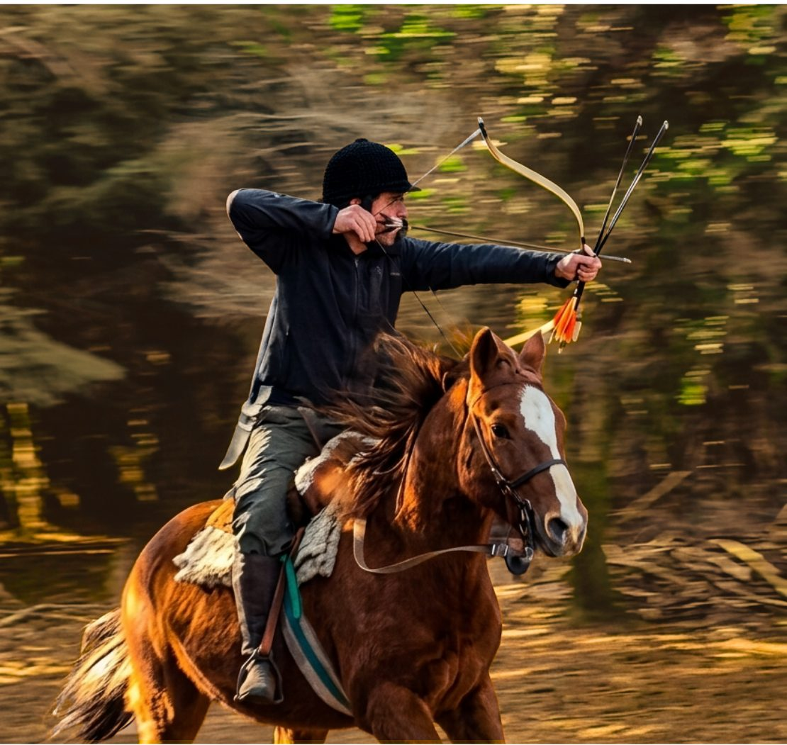

Clínica deportiva
Dos o tres jornadas intensivas para quienes quieren iniciarse en la arquería montada desde una perspectiva técnica y deportiva.
Diseñado para que, desde el nivel en el que te encuentres, construyas las bases necesarias para comenzar a entrenar con propósito.